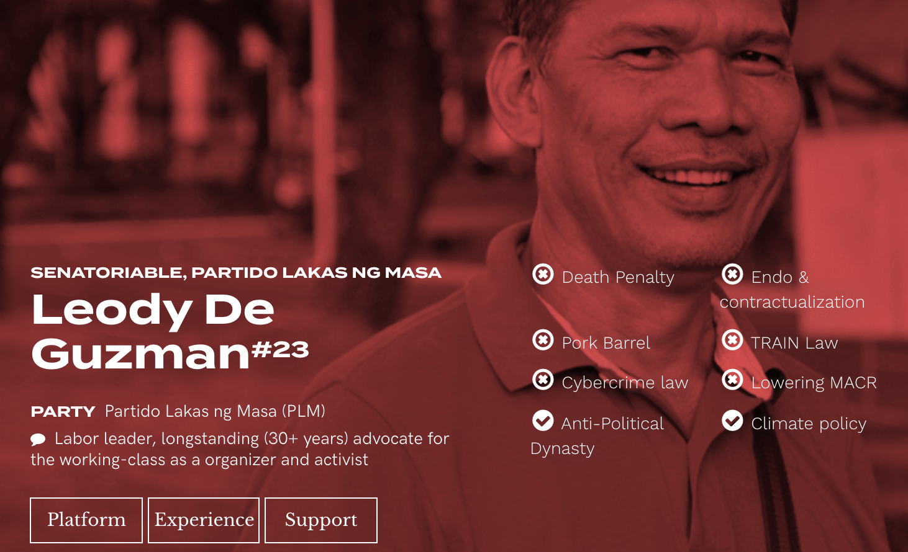

Last.fm is the music search & discovery network. In a time of streaming sites galore, Last.fm remains the go-to space for strong listeners to track history, fan over songs, and find people just like thme. As we move more onto mobile listening, I thought of revamping the aged Last.fm application to give weight to the music we love.
Context
Learning and spreading what you love
The beauty of Last.fm is that it puts discovery together with community, while providing comprehensive listening statistics from every platform I listen to. It's essentially a music lover's dream: data-driven and social—and it seems the music community agrees
Last.fm brands itself as your "musical calling card." However, it's difficult to access this information on the mobile app.
 The current Last.fm mobile app
The current Last.fm mobile app
Despite this, majority of senatorial candidates did not have platforms or materials up. Most had at least a somewhat active social media presence, but no websites or information sheets—at best, you'd find a Facebook description.

Problem Identification
- Low candidate awareness of progressive candidates (generally candidates in the Labor or Liberal parties)
- These candidates don't have the funds or time to campaign on-ground, yet aren't capitalizating on a significant space for political discussion: online spheres
- Poor or nonexistent infrastructure to display candidate platforms and information online, and even offline
From senatorial candidate surveys, it was clear that awareness and education were paralyzing issues. At the same time, majority of Filipinos reported the internet and social media as their tool for information in the electoral season.
OUR QUESTIONS—How can we educate voters through social platforms? How can we encourage discussion and conversations for the Filipino voter?
MY ROLE—For this project, I acted as a lead researcher, project manager, and engineer developing the flow of Iboto.ph and our presence on different platforms. By the end, Iboto.ph had garnered millions of hits on our website, reached over 600,000 engagements on Facebook, and received the official attention from over 6 senatorial candidates.
Research and connection building for the project began as early as September 2018; though it was incredibly hard to get in touch with many campaign teams, even far before the campaigning season had kicked off

Focusing on progressive candidates
In its inception, the vision for Iboto.ph was to be a database for all candidates. We already knew that certain parties topped the popularity charts and that it was difficult for other senatorial candidates to put together resources to match these campaigns.
Instead of being an all-around platform, the team decided to publish pages for progressive candidates only to specifically forward and act as a unique network collating these candidates together. This decision would then pave the usage we would imagine for the tool, as well as how we would position and distribute ourselves.
Inquiry
Elections for the online Filipino
Meaning "to vote" in Tagalog, the title Iboto.ph was chosen for its simplicity and forwardness.
Mostly made in three weeks prior to the May 13 elections with a small team, we surveyed the Philippine digital landscape and tried to get a deeper sense of what kinds of Filipinos were out there.


OUR PERSONA
Juan
Class D or Broad C; uses Facebook often to chat with friends/family, game, post pictures. Frequently comments and shares, uses Messenger and also text messaging a lot. Uses mobile data and Facebook free. On occasion, visits computer shop but for more work-related tasks. Online every single day.
To present information effectively, we opted for a website with infographic-like displays. On first glance, viewers would be able to see candidate stances on critical and timely issues — from lowering the minimum age of criminal responsibility to divorce. Each point would link the user to a relevant article or claim about the chosen information.
Procuring viewpoints on each issue was a bit of a challenge: we wanted to standardize viewpoints on key issues as much as possible, but shifted the list of stances based on what users frequently searched. We also sifted through their social accounts, past interviews, official senatorial debates, and program lists (for the few that had materials) in order to come up with eight key stances for the landing.
To better this process, members of the team conducted card sorting tests with a selection of respondents to prioritize what stances to highlight after constructing the initial list.
- Design to satisfy user desires: we furthered Iboto.ph's social presence as users moved to use our tools to carry conversations over.
- Neutrality is not an option: designing to reach those who could change their viewpoints and spread the word to support our candidates was priority—tech is never neutral.
There's value in engaging with the principles that voters believe in, and using those as grounds to understand, listen, and respond effectively. Fighting categorization and labeling through engagement was key, and we're looking forward to more spaces that encourage discussions like this.
Isang boto, isang bayan.
Visit Iboto.ph